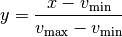
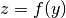

Image stretching and normalization¶
The astropy.visualization module provides a framework for
transforming values in images (and more generally any arrays),
typically for the purpose of visualization. Two main types of
transformations are provided:
- Normalization to the [0:1] range using lower and upper limits where
 represents the values in the original image:
represents the values in the original image:

- Stretching of values in the [0:1] range to the [0:1] range using a linear or non-linear function:

In addition, classes are provided in order to identify lower and upper limits for a dataset based on specific algorithms (such as using percentiles).
Identifying lower and upper limits, as well as re-normalizing, is described in the Intervals and Normalization section, while stretching is described in the Stretching section.
Intervals and Normalization¶
Several classes are provided for determining intervals and for
normalizing values in this interval to the [0:1] range. One of the
simplest examples is the
MinMaxInterval which determines the
limits of the values based on the minimum and maximum values in the
array. The class is instantiated with no arguments:
>>> from astropy.visualization import MinMaxInterval
>>> interval = MinMaxInterval()
and the limits can be determined by calling the
get_limits() method, which
takes the array of values:
>>> interval.get_limits([1, 3, 4, 5, 6])
(1, 6)
The interval instance can also be called like a function to
actually normalize values to the range:
>>> interval([1, 3, 4, 5, 6])
array([ 0. , 0.4, 0.6, 0.8, 1. ])
Other interval classes include
ManualInterval,
PercentileInterval,
AsymmetricPercentileInterval, and
ZScaleInterval. For these, values in
the array can fall outside of the limits given by the interval. A
clip argument is provided to control the behavior of the
normalization when values fall outside the limits:
>>> from astropy.visualization import PercentileInterval
>>> interval = PercentileInterval(50.)
>>> interval.get_limits([1, 3, 4, 5, 6])
(3.0, 5.0)
>>> interval([1, 3, 4, 5, 6]) # default is clip=True
array([ 0. , 0. , 0.5, 1. , 1. ])
>>> interval([1, 3, 4, 5, 6], clip=False)
array([-1. , 0. , 0.5, 1. , 1.5])
Stretching¶
In addition to classes that can scale values to the [0:1] range, a
number of classes are provide to ‘stretch’ the values using different
functions. These map a [0:1] range onto a transformed [0:1] range. A
simple example is the SqrtStretch
class:
>>> from astropy.visualization import SqrtStretch
>>> stretch = SqrtStretch()
>>> stretch([0., 0.25, 0.5, 0.75, 1.])
array([ 0. , 0.5 , 0.70710678, 0.8660254 , 1. ])
As for the intervals, values outside the [0:1] range can be treated
differently depending on the clip argument. By default, output
values are clipped to the [0:1] range:
>>> stretch([-1., 0., 0.5, 1., 1.5])
array([ 0. , 0. , 0.70710678, 1. , 1. ])
but this can be disabled:
>>> stretch([-1., 0., 0.5, 1., 1.5], clip=False)
array([ nan, 0. , 0.70710678, 1. , 1.22474487])
Note
The stretch functions are similar but not always strictly
identical to those used in e.g. DS9 (although they should have
the same behavior). The equations for the DS9 stretches can be
found here and can be
compared to the equations for our stretches provided in the
astropy.visualization API section. The main difference between
our stretches and DS9 is that we have adjusted them so that the
[0:1] range always maps exactly to the [0:1] range.
Combining transformations¶
Any intervals and stretches can be chained by using the +
operator, which returns a new transformation. When combining intervals
and stretches, the stretch object must come before the interval
object. For example, to apply normalization based on a percentile
value, followed by a square root stretch, you can do:
>>> transform = SqrtStretch() + PercentileInterval(90.)
>>> transform([1, 3, 4, 5, 6])
array([ 0. , 0.60302269, 0.76870611, 0.90453403, 1. ])
As before, the combined transformation can also accept a clip
argument (which is True by default).
Matplotlib normalization¶
Matplotlib allows a custom normalization and stretch to be used when
displaying data by passing a matplotlib.colors.Normalize
object, e.g. to imshow(). The
astropy.visualization module provides an
ImageNormalize class
that wraps the interval (see Intervals and Normalization) and
stretch (see Stretching) objects into an object Matplotlib
understands.
The inputs to the
ImageNormalize class are
the data and the interval and stretch objects:
import numpy as np
import matplotlib.pyplot as plt
from astropy.visualization import (MinMaxInterval, SqrtStretch,
ImageNormalize)
# Generate a test image
image = np.arange(65536).reshape((256, 256))
# Create an ImageNormalize object
norm = ImageNormalize(image, interval=MinMaxInterval(),
stretch=SqrtStretch())
# or equivalently using positional arguments
# norm = ImageNormalize(image, MinMaxInterval(), SqrtStretch())
# Display the image
fig = plt.figure()
ax = fig.add_subplot(1, 1, 1)
im = ax.imshow(image, origin='lower', norm=norm)
fig.colorbar(im)
{kind=link}
{kind=link}
As shown above, the colorbar ticks are automatically adjusted.
Also note that while the input image to
ImageNormalize is
typically the one to be displayed, a completely different image can be
used to establish the normalization (e.g. if one wants to display
several images with exactly the same normalization and stretch).
The inputs to the
ImageNormalize class can
also be the vmin and vmax limits, which you can determine from the
Intervals and Normalization classes, and the stretch object:
import numpy as np
import matplotlib.pyplot as plt
from astropy.visualization import (MinMaxInterval, SqrtStretch,
ImageNormalize)
# Generate a test image
image = np.arange(65536).reshape((256, 256))
# Create interval object
interval = MinMaxInterval()
vmin, vmax = interval.get_limits(image)
# Create an ImageNormalize object using a SqrtStretch object
norm = ImageNormalize(vmin=vmin, vmax=vmax, stretch=SqrtStretch())
# Display the image
fig = plt.figure()
ax = fig.add_subplot(1, 1, 1)
im = ax.imshow(image, origin='lower', norm=norm)
fig.colorbar(im)
{kind=link}
{kind=link}
Finally, we also provide a convenience
simple_norm() function that
can be useful for quick interactive analysis (it is also used by the
fits2bitmap command-line script). However, it is not recommended
to be used in scripted programs; it’s better to use
ImageNormalize directly:
import numpy as np
import matplotlib.pyplot as plt
from astropy.visualization import simple_norm
# Generate a test image
image = np.arange(65536).reshape((256, 256))
# Create an ImageNormalize object
norm = simple_norm(image, 'sqrt')
# Display the image
fig = plt.figure()
ax = fig.add_subplot(1, 1, 1)
im = ax.imshow(image, origin='lower', norm=norm)
fig.colorbar(im)
{kind=link}
{kind=link}